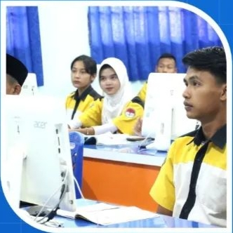

Sejarah
Sekolah Menengah Kejuruan (SMK) Negeri 4 Tanjungpinang berdiri pada 22 September 2008, dengan bidang Keahlian Teknologi Informasi dan Komunikasi dengan jurusan pertama dibuka adalah Teknik Komputer dan Jaringan. Pada tahun 2008 SMK Negeri 4 Tanjungpinang dipimpin oleh Kepala Sekolah bernama Rospan Namu, S. Pd. Pada tahun 2009 SMK Negeri 4 Tanjungpinang dipimpin oleh Kepala Sekolah bernama Drs. Zulfikar, M. Pd. Pada tahun 2013 SMK Negeri 4 Tanjungpinang dipimpin oleh Kepala Sekolah bernama Sulasmi, S. Pd dengan membuka dan mengembangkan Bidang Keahlian Teknologi Informasi dan Komunikasi Program Keahliannya Teknik Komputer dan Informatika. Kompetensi Keahliannya Rekayasa Perangkat Lunak, Teknik Komputer dan Jaringan, Multimedia, serta bidang keahlian seni dan industri kreatif program keahliannya seni rupa kompetensi keahliannya Animasi. Pada tahun 2024 awal, SMK Negeri 4 Tanjungpinang dipimpin oleh Kepala Sekolah Bernama Yayuk Sri Mulyani Rahayu, S. Pd, M.M. hingga sekarang.
RPL
Rekayasa Perangkat Lunak

Buat kamu yang hobi ngoding, dijurusan ini kamu bisa belajar membuat aplikasi berbasis dekstop dan android. Kalian juga akan diajarkan bagaimana membuat sebuah website dan online store serta berbagai aplikasi lainnya dengan bahasa pemrograman bermacam - macam.
GIM
Buat kamu yang hobi bermain game, jangan cuman jadi player. Dijurusan ini kamu bisa belajar membuat aplikasi game berbasis android. Kalian juga akan diajarkan bagaimana membangun sebuah aplikasi game meulai dari mendesain karakter hingga asset asset yang ada ada didalamnya. Yang pasti akan seru banget kalau kalian bisa membuat dan memainkan game hasil karya kalian sendiri.
TKJ
Teknik Komputer Jaringan
Jaringan Wifi sudah merajalela, penasaran cara membangun jaringan wifi? Disini kamu akan belajar tentang membangun jaringan kabel dan wifi dengan teknologi fiber optik, perakitan dan troubleshootingkomputer, membangun jaringan PC server. Menghasilkan komputer dan network administrator yang berkompeten.
DKV
Desain Komunikasi Visual
Sudah saat nya karya yang berbicara. Buat kamu yang senang dengan dunia digital khususnya desain dan editing, Desain Komunikasi Visual (DKV) adalah tempatnya. Kalian akan diajarkan teknik mendesain dengan benar sesuai dengan prinsip dasar desain. Tidak hanya itu, hobby fotografi dan videografi kalianpun akan berkembang, karena DKV merupakan jurusan yang memang dikhususkan bagi kalian yang punya bakat dan kreatifitas tinggi dibidang seni desain.
PSPT
Produksi dan Siaran Program Televisi

Yang punya cita - cita berkarir di industri pertelevisian. Jurusan ini pas buat kulian. Kalian akan belajar menjadi crew industri pertelevisian, belajar bagaimana membuat sebuah SET acara atau program televisi. Jadi sudah bukan saatnya lagi kita menjadi prnonton acara TV. Kitalah yang akan menjadi pelaku program televisi yang ada.
Animasi

Suka sama film animasi, kartun atau anime dan objek nyata yang dituangkan dalam bentuk gambar 2 Dimensi atau 3 Dimensi? Kamu akan belajar membuat animasi di jurusanini mulai dari basic animation sampai dengan pembuatan animasi dengan peralatan yang canggih.